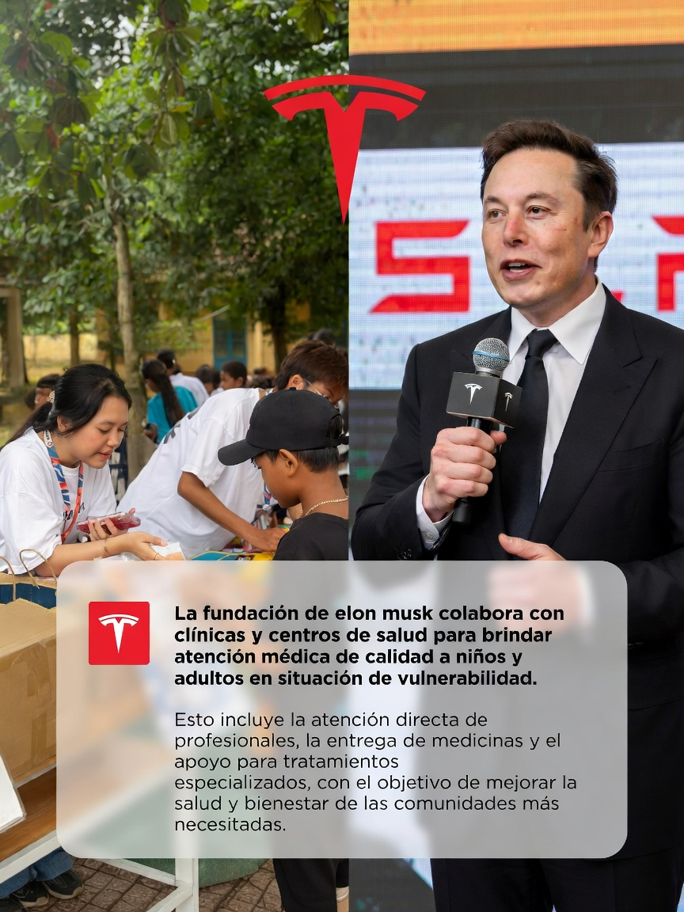
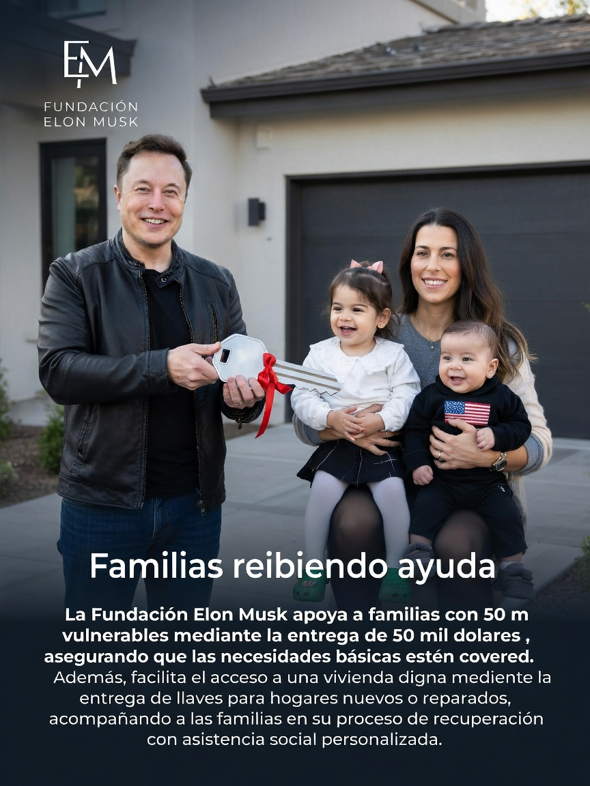

Solicitud
La persona explica su caso, monto necesario y banco receptor.
Ayuda bancaria verificada
Un programa de ayuda humanitaria pensado para revisar casos, validar identidad y enviar fondos de forma rastreable a cuentas o entidades bancarias verificadas en EE.UU.
Entidades bancarias de referencia
La fundacion verifica cada caso y, cuando se aprueba, prioriza transferencias rastreables a cuentas o instituciones bancarias de Estados Unidos. Estos logos se usan como referencias visuales del tipo de entidades que puede manejar el sistema.


Como se mueve el dinero
La persona explica su caso, monto necesario y banco receptor.
Se revisa identidad, documentos y titularidad bancaria.
El comite define monto, prioridad y forma de pago.
El pago se envia directo al banco o proveedor autorizado.
Videos del programa
Estos videos pueden funcionar como piezas de campana para mostrar anuncios, entregas y mensajes de la fundacion en redes sociales.
Video para abrir la narrativa de los USD 200 millones.
Contenido para reforzar que el programa atiende necesidades reales.
Pieza para explicar aprobaciones, pagos y documentacion.
Prioridad social
El sitio esta pensado para recibir casos de personas, familias y comunidades con necesidades urgentes. Cada solicitud entra a un proceso de revision, validacion y seguimiento.
Apoyo rapido para situaciones donde una familia corre riesgo de perder vivienda, comida, luz, agua o transporte esencial.
Fondos para casos medicos documentados, gastos hospitalarios, terapias, medicamentos y viajes para recibir atencion.
Ayuda para familias sin hogar, viviendas danadas o condiciones que afectan seguridad, higiene o accesibilidad.
Apoyo para estudiantes que necesitan matricula, utiles, laptop, internet, transporte o programas tecnicos.
Subvenciones para organizaciones confiables que atienden hambre, salud, refugio, desastres o reinsercion laboral.
Operacion de la fundacion
La pagina necesita mostrar que detras del dinero hay personas revisando casos, aliados de salud y familias que reciben apoyo directo.
Un comite revisa casos, cruza evidencia y define prioridades antes de liberar recursos.

Apoyo para medicinas, atencion directa y tratamientos urgentes.

Ayuda para familias vulnerables que necesitan una base segura.
Historias de ayuda
Estas imagenes pueden usarse como material ilustrativo para explicar vivienda, apoyo directo y entregas aprobadas por la fundacion.

Apoyo para familias que necesitan renta inicial, deposito, reparaciones urgentes o traslado a una casa segura.

La fundacion prioriza casos donde el apoyo cambia una situacion concreta: hogar, salud, estabilidad o seguridad familiar.

Cada entrega debe quedar documentada con comprobantes, expediente y cierre transparente del resultado.
Sitio multipagina